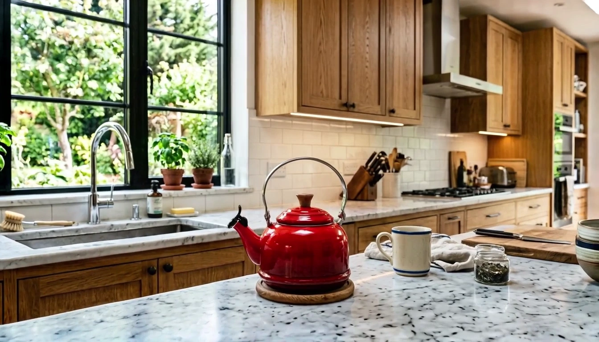
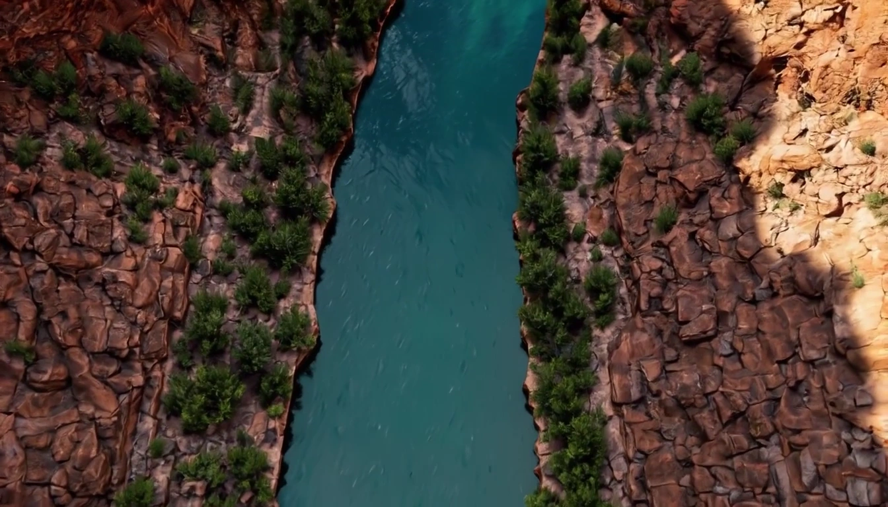
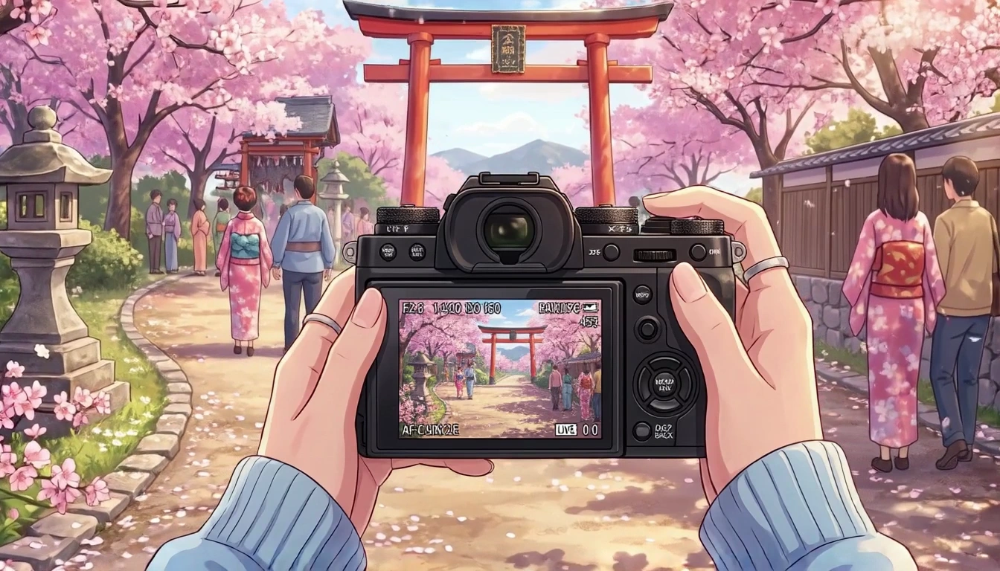

CONTROL MEETS MEMORY
Rehearse the motion.
Remember
the world.
A training-free agent system that helps video world models follow your instructions and hold on to the world they create.
Five frozen backbones. No additional model training.

THE IDEA
A world should do more
than look convincing.
It should go where you ask.
And recognize where it has been.
Pretrained video models have rich visual priors, but reliable motion and persistent scene memory remain difficult. WorldRehearsal separates these responsibilities: an agent maintains a renderable world and historical evidence, while a frozen video model turns their plans into visual observations.
The generated observations feed back into the next interaction. Adaptation happens in the conditions and the persistent state, without updating model parameters.
WBench navigation
WorldMark navigation
WorldMark Revisit-Z
One external agent system
Equal-weight averages across five backbones. WorldMark navigation averages four motion families. Revisit-Z jointly reflects return execution and content retention.
FROM REFERENCE TO REALIZATION
Look inside the generation.
Slide between the spatial reference and the generated video. Both videos play at the same timestamp.
The reference shows the rendered spatial plan. Four consecutive segments are shown in their original order.
Drag, tap, or use the arrow keys on the divider.
A STATEFUL AGENT HARNESS
Plan. Generate.
Observe. Remember.
The agent handles reasoning and memory. The video model handles visual synthesis. Each generation becomes evidence for the next.
Geometry gives the plan a place to happen.
VGGT supplies depth and camera geometry. VLM-guided SAM3 regions attach semantic identities to visible surfaces. The resulting world is a partial, renderable spatial hypothesis grounded in observations.
Static scenery, camera-carried foreground, and controlled actors need different motion representations.
CROSS-BACKBONE EVIDENCE
Stronger control.
Across frozen generators.
Five backbones, two benchmarks. We evaluate navigation, memory-related behavior, and image quality separately.
BaselineWorldRehearsal
WBENCH NAVI OVERALL
+15.89points on averageEvery backbone improves.
Navigation gains range from 10.54 to 20.66 points. The benefit recurs across the tested generator architectures.
Explore the full scores
All scores are on a 0–100 scale, higher is better. DA, MP, MS, and RL each average translation and rotation equally. Image averages benchmark-level MUSIQ means equally. Scores are transcribed from the supplied manuscript.
WHAT WE LEARNED
The conditions
make the difference.
A frozen generator still responds to how information is presented, what it contains, and which history is made relevant.
REFERENCE REPRESENTATION
The same plan can be expressed differently.
Gray surfaces with structural lines improve navigation and three consistency measures over no reference. White and gray variants share the same geometry and trajectory.
66.05 to 86.67 Navi

Target motion. Move forward through the canyon while tilting the camera down toward the river.
Representation scores
| Template | Geom. | Photom. | Motion. | Navi | Image |
|---|---|---|---|---|---|
| No reference | 96.40 | 46.75 | 98.50 | 66.05 | 67.81 |
| White + structure | 96.80 | 46.09 | 98.80 | 85.51 | 68.55 |
| Gray + structure | 97.08 | 49.40 | 98.93 | 86.67 | 68.43 |
84 paired cases. Motion. means Motion Smoothness. These are individual metrics, not a composite consistency score.
REFERENCE CONSTRUCTION
Motion should not erase the foreground.
Depth-only guidance can create strong apparent motion while losing a carried object. Coordinating geometry, semantic regions, and foreground roles better preserves entities.
A qualitative example complements the aggregate comparison; it is not a claim that every case improves.

Target behavior. Keep the handheld camera and both hands in view as the viewpoint moves.
Reference construction scores
| Reference | Subject | View | Geom. | Navi | Image |
|---|---|---|---|---|---|
| None | 93.58 | 87.74 | 96.21 | 65.62 | 68.51 |
| VGGT | 87.48 | 66.01 | 96.56 | 86.96 | 67.97 |
| SAM3 | 92.75 | 78.14 | 96.17 | 73.91 | 68.85 |
| VGGT + SAM3 | 88.10 | 66.89 | 95.92 | 75.57 | 68.87 |
| GSV (Ours) | 94.96 | 89.89 | 96.81 | 89.73 | 68.11 |
Subject and View use 29 applicable cases; other columns use 84. The complete construction changes several linked design decisions.
HISTORICAL EVIDENCE
Remembering is also a conditioning problem.
Stored identity records and retrieved views complement the current image. They inform the agent’s prompt, rather than becoming extra image inputs to the generator.
Target behavior. The surfboard should remain recognizable when the view returns to it. This coastal example compares the full systems. The table reports the historical-input ablation.
| Agent evidence | Spatial | Gated S. | Navi | Image |
|---|---|---|---|---|
| Current | 78.79 | 76.11 | 80.81 | 66.32 |
| + Records | 79.91 | 76.83 | 80.90 | 66.38 |
| + Retrieval | 80.32 | 77.49 | 82.10 | 66.54 |
Rows add evidence cumulatively. Records include the original identity photograph and historical text. Small mean differences do not imply uniform gains across cases.
WHEN THE REFERENCE MATTERS
Same budget.
Different moment.
Reference exposure has two dimensions: how long it lasts, and when it happens. All configurations still execute all 11 denoising calls.
At the same six-call exposure, early reference guidance produces stronger navigation than late guidance.
Canyon example: early guidance turns the view toward the river, while late guidance retains more of the opening composition.
Duration changes the trade-off.
Averaging over starts, increasing exposure from 1 to 10 calls changes Navi from 66.17 to 77.24, while Aesthetic changes from 65.38 to 64.12.
Placement changes the outcome.
At length 6, early guidance gains 15.95 Navi points over late guidance, with a paired 95% bootstrap interval of [9.92, 22.23]. Late guidance has a higher Aesthetic mean.
Aggregate scores above use the 84-case study. Videos show individual examples. These observations do not identify the internal mechanism or establish one optimal schedule for every scene.
EXPLORE THE RESEARCH
About the research
WorldRehearsal: A Training-Free Agent System for Control and Memory in Video World Models
Citation
@misc{worldrehearsal2026,
title = {WorldRehearsal: A Training-Free Agent System
for Control and Memory in Video World Models},
year = {2026},
note = {Research manuscript}
}
Scope
The system requires compatible reference-conditioning interfaces. Geometry and generated observations remain imperfect, image-quality trade-offs vary by backbone, and additional agent and reconstruction computation is not included in a matched end-to-end latency comparison.